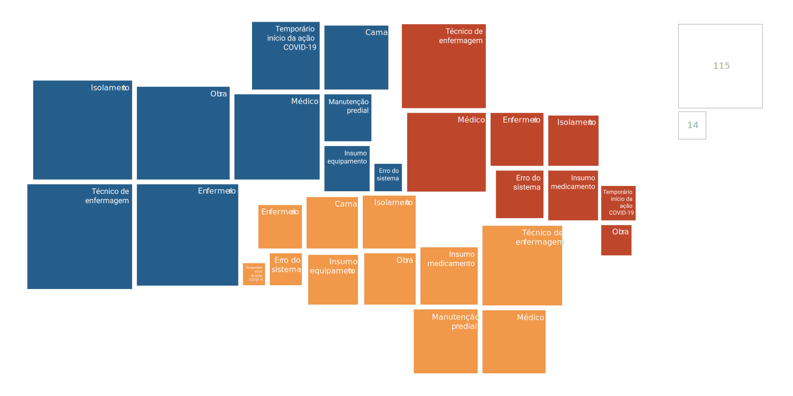
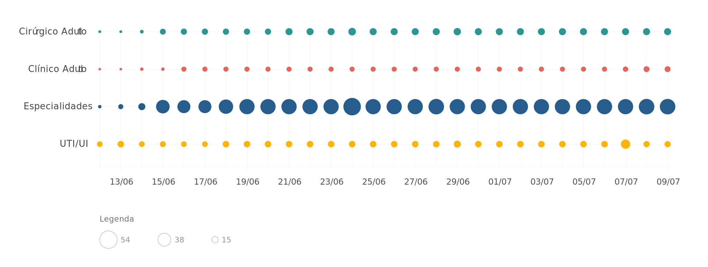
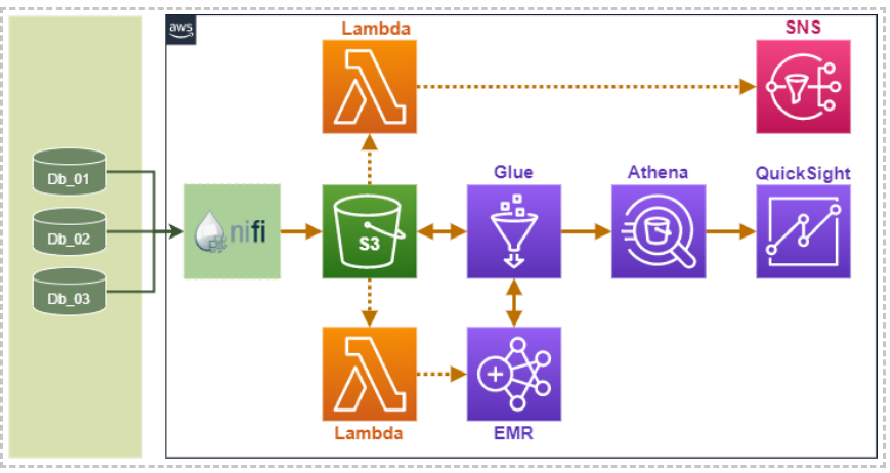

APIsInterface de Programação de Aplicações. Recurso que facilita a integração automática entre programas de computador.
CIBComitê Intergestores Bipartite.
Diagramas de entidade-relacionamentoRepresentação gráfica de como os campos de informações se relacionam entre as diferentes tabelas que compõem um banco de dados.
Dicionário de variáveis
Correspondência entre os nomes das variáveis como aparecem no banco de dados e uma descrição compreensível de qual informação está contida ali.
IDs incrementais
Sequência de letras ou números que funcionam como identificador único de um registro em uma tabela.ID incremental: identificador único atribuído a cada novo registro na tabela, somando uma unidade ao ID do último registro inserido.
Logs de transações
Controle de todas as operações de inserção e exclusão de registros no banco de dados.
Variável-respostaEm uma análise estatística, é a grandeza que varia em função das outras que estão sendo consideradas.
WebServicesrecursos que facilitam a integração automática entre programas de computador, via internet.
glossário
A oportunidade surge, portanto, da união entre os problemas de transparência da gestão hospitalar, a possibilidade de aumentar a eficiência na saúde e a necessidade de o MPRJ construir um modelo mais eficiente de atuação. É um espaço fértil para o MPRJ se aproximar de um modelo de atuação mais eficaz e garantir melhor custo-efetividade de serviços públicos e programas de governo.
Identificar e monitorar problemas sociais em cada unidade do território
Construir modelos visuais para compreender a causa dos problemas e seus impactos
Direcionar coleta de dados e intervenções de controle e gestão em torno de problemas prioritários
Compartilhar materiais e estudos para embasar sua própria atuação e/ou a do bom gestor
O projeto Bússola _ Gestão Hospitalar nasceu com o intuito de promover a transparência de dados da gestão de hospitais da rede pública e, ao mesmo tempo, direcionar a atuação de órgãos de controle e gestores para o que há de mais crítico nesse tema. Há espaço para evoluções expressivas na prestação de contas e no método pelo qual os gestores da área priorizam intervenções para ganhos de eficiência.
Por um lado, é necessário assegurar o registro e a disponibilização de informações hospitalares em formato aberto e com frequência próxima ao tempo real. Não há como gerenciar aquilo que não se mede. E somente com a abertura dos dados é possível garantir a confiabilidade dos dados e utilizar os avanços tecnológicos para gerar inteligência estratégica. Qual gestor bem intencionado pode ter medo da transparência?
Por outro lado, não utilizar critérios analíticos para priorizar problemas é um erro comum e grave no setor público de modo geral. Não adianta construir painéis enciclopédicos de monitoramento. É fácil ser inundado por dados – o que pode causar o mesmo efeito da falta deles. O olhar tático-operacional, que norteia a ação, precisa direcionar o foco dos tomadores de decisão para os temas mais críticos. Por isso o nome de Bússola para esse projeto.
O Inova_MPRJ desenhou o projeto piloto de modo a incluir em seu escopo o Hospital Estadual Adão Pereira Nunes (HEAPN), localizado em Duque de Caxias, e o Hospital São João Batista (HSJB), em Volta Redonda. No entanto, com o advento da crise da COVID-19, o Laboratório redirecionou esforços para também atender às demandas prementes da Força-Tarefa de Enfrentamento ao COVID-19 (FTCOVID-19/MPRJ).
A construção do projeto seguiu a lógica proposta pela trilha azul do Fluxo de Transformação. Isto é, o componente do método de trabalho do Inova_MPRJ focado em resultados de priorização, abertura de dados e monitoramento.
O Laboratório realizou diagnóstico de bases de dados e dos principais sistemas e fluxos de informação da rede pública de saúde; identificou indicadores prioritários relacionados à crise; apoiou a atividade-fim do MPRJ nas requisições de acesso (sem intermediários) a dados de interesse; concebeu inteligência de dados para orientar tomadores de decisão – em formatos de painel e de alertas automatizados; e construiu protótipo clicável de plataforma de inteligência de dados - em formatos de painel e de alertas automatizados - para orientar tomadores de decisão.
desafios e oportunidades
Saúde é função prioritária de governo. Por isso, os estados são legalmente obrigados a aplicar em ações e serviços vinculados à área o mínimo de 12% de suas receitas anuais de impostos, após descontos. A agenda envolve volume expressivo de recursos financeiros, forte relação com diferentes setores industriais e impacto direto na qualidade de vida da população - especialmente em contexto de pandemia.
Ainda que grande parte dos hospitais públicos já monitore dados por meio de sistemas próprios, a prestação de contas no setor está muito aquém do modelo ideal. Propriedades importantes do bom monitoramento se perdem no caminho até as autoridades de saúde do Executivo e no longo trajeto até órgãos de controle e sociedade civil.
A transferência de informações é defasada temporalmente e, muitas vezes, realizada em formatos que não permitem o melhor uso da inteligência computacional. Além disso, quanto mais etapas e atores envolvidos no caminho, maiores as chances de diminuir o grau de confiabilidade das informações – as mesmas que subsidiam importantes decisões de controle e gestão.
Ademais, há
fortes indícios de que existe espaço para ganhos de eficiência no setor. Entre eles, o fato de o volume de ações e serviços públicos prestados não ter apresentado variação proporcional à queda nos investimentos durante grande parte da última década. Ou seja, se a qualidade do serviço não piorou quando o estado deixou de aplicar o mínimo legal, é sinal de que os recursos financeiros não estão sendo aproveitados da melhor forma.
O MPRJ, por sua vez, precisa seguir se transformando para alcançar maior efetividade no controle preventivo e estruturante de programas de governo e serviços públicos. Isso envolve garantir transparência, acesso eficiente a dados e motivação analítica das escolhas do Executivo. O potencial é enorme e a agenda de inovação é estratégica para atingi-lo.
Na prática, o MPRJ precisa aprimorar o método que utiliza para:
visãoO experimento se propõe a desenhar e orientar a implementação de estratégias de abertura, monitoramento e comunicação de dados públicos. A visão envolve prototipar o modelo ideal de prestação de contas e criar inteligência voltada à ação – por meio de painéis e alertas automatizados para tomadores de decisão.
Diante da pandemia da COVID-19, a estratégia se dividiu a partir de dois olhares distintos e complementares. Por um lado, olhar para unidades hospitalares específicas é essencial para construir e apresentar o melhor modelo de transparência. Provavelmente via computação em nuvem, de ponta a ponta, envolvendo desde o registro até a visualização da informação pela gestão do hospital, pelo Executivo e por instituições de controle.
Por outro, o sistema de saúde de modo amplo é imprescindível para atender às demandas emergenciais da crise e montar o “quebra cabeça” da gestão de dados públicos da saúde. O objetivo é compreender com profundidade os contextos nos quais estão inseridos bancos, bases, sistemas e fluxos de dados hospitalares.
A consulta direta aos bancos, com processo confiável e contínuo de comunicação de dados, é essencial para concretizar a visão de atuação preventiva e estruturante do MPRJ. Somente assim é possível fazer o melhor uso da Inteligência Artificial e obter flexibilidade para realizar diferentes análises a todo momento. Isto é, se antecipar a problemas, dispor de inteligência adaptável a múltiplos contextos e garantir a não adulteração dos dados.
A inteligência produzida com esses dados se materializa de duas formas. A primeira, de caráter exploratório e voltado para o acompanhamento ativo dos dados monitorados, é disponibilizada em forma de painéis dinâmicos, contextualizações discursivas e indicação de políticas baseadas em evidência. Sempre em formato web e, quando não envolver informações sigilosas ou sensíveis, com livre acesso para academia, sociedade civil, gestores públicos e órgãos de controle.
O segundo tipo de inteligência tem como objetivo orientar ações sem que os tomadores de decisão precisem buscar ativamente a informação. Isto é, quando os dados apontam situações alarmantes, são enviados alertas automáticos que expõem o problema, junto a documentos pré-formatados, como requisições de esclarecimentos e/ou minutas de ação, prontos para assinatura e encaminhamento.
resultados diretos
O Inova_MPRJ apresentou como primeiros resultados o diagnóstico de bases, sistemas e fluxos de dados do Sistema Único de Saúde (SUS) e a priorização entre 14 indicadores relacionados à pandemia. Em seguida, elaborou minutas de ofício requisitando os dados necessários ao cálculo dos indicadores e iniciou a construção de uma arquitetura de coleta e inteligência de dados voltada à ação.
Os resultados diretos, discutidos mais detalhadamente na seção caminho, estão resumidos nas tabelas e imagens a seguir:
_diagnóstico de bases, sistemas e fluxos de transmissão de dados do SUS
O diagnóstico teve como base a pesquisa de mesa realizada pela equipe do Inova_MPRJ e entrevistas com profissionais de TI de diversas áreas: da gestão pública, de desenvolvedores de sistemas hospitalares e de fornecedores de sistemas de computação em nuvem. O diagnóstico privilegiou os sistemas com cobertura mais representativa na rede de saúde do estado do Rio de Janeiro, considerando os grupos temáticos levantados ao longo do processo de priorização.
Sistema do Cadastro Nacional de Estabelecimentos de Saúde (SCNES)
Sistema de Informações Ambulatoriais do SUS (SIASUS) e Sistema de Informações Hospitalares do SUS (SIHSUS)
Sistema de Escrituração Digital das Obrigações Fiscais, Previdenciárias e Trabalhistas (eSocial) e Sistema Integrado de Gestão dos Recursos Humanos (SIGRH)
_Histórico de admissão, demissão e afastamentos de todos os profissionais com vínculo empregatício com as unidades e suas mantenedoras;
_Folhas de pagamento, incluindo descontos e adicionais;
_Informações sobre riscos trabalhistas e acidentes de trabalho.
Sistema Informatizado de Controle de Escalas de Serviço
Sistema Integrado de Gestão Orçamentária, Financeira e Contábil do Rio de Janeiro (SIAFE-Rio) e Sistema Integrado de Gestão Fiscal (SIGFIS)
Sistema Integrado de Compras e Aquisições (SIGA)
_Escalas de atendimento dos profissionais nas unidades estaduais de pronto atendimento e de urgência e emergência;
_Dados orçamentários e da movimentação financeira e contábil do Governo do Estado (SIAFE-Rio e SIGFIS-Estadual) e dos municípios, exceto a Capital (SIGFIS-Municipal);
_Dados relativos à execução de obras e serviços contratados.
_Dados relativos às aquisições centralizadas de bens e serviços pelo Governo do Estado;
_Registros detalhados dos lances e ocorrências em pregões eletrônicos;
_Catálogos de materiais e serviços e banco de preços;
_Cadastro de fornecedores.
_Acompanhamento de todos os processos eletrônicos internos da SES/RJ e do Governo do Estado, incluindo compras e contratações.
(Nº. leitos com status = “Bloqueado”) / (Nº. Leitos instalados)
Por tipo de leito (UTI, enfermaria, pediatria, isolamento, centro cirúrgico etc.).
(Data e hora de entrada no hospital de destino) – (Data e hora de inscrição da demanda no sistema de regulação)
Por tipo de leito e indicador da gravidade da condição de saúde.
(Nº. de testes RT-PCR aplicados em profissionais de saúde com vínculo com o estabelecimento) / ((Nº. de profissionais de saúde com vínculo com o estabelecimento) * Semana)
Por estabelecimento e ocupação do profissional de saúde.
(Número de procedimentos diagnósticos realizados) / (Número de atendimentos de pacientes com síndromes respiratórias)
Por tipo de procedimento e tipo de atendimento (ambulatorial ou hospitalar).
(Nº. de equipamentos para manutenção da vida) / (Nº. de leitos de UTI)
Por tipo de equipamento.
(Posição do estoque do insumo ou medicamento) / (Nº. de leitos instalados)
Considerados os insumos constantes da lista do CONASEMS e os medicamentos da lista da OPAS
(SOMA Saídas de EPIs) / (Nº. Profissionais com vínculo)
Considerados os EPIs constantes da lista do CONASEMS. Por tipo de EPI.
(Nº. EPIs em estoque sem registro na Anvisa) / (Nº. de EPIs em estoque).
Dispensa de registro nos termos da RDC 349/2020 ou equipamentos utilizados em ambiente distinto daquele para o qual foi licenciado.
(SOMA (Hora de saída - Hora de entrada) por semana) - Carga horária contratada
Considerados apenas profissionais em que o indicador é positivo.
(SOMA (Hora de saída - Hora de entrada) por semana) - Carga horária contratada
Considerados apenas profissionais em que o indicador é negativo.
(SOMA (Carga horária) dos profissionais afastados) / (SOMA (Carga horária) de todos os profissionais)
Por ocupação e setor do hospital.
(MÉDIA ((Data de início do vínculo profissional) - (Data de instauração do processo administrativo com demanda de contratação)))
Por ocupação dos profissionais contratados.
(MÉDIA após Covid19 (SOMA por data (Hora de saída - Hora de entrada)) - (MÉDIA últimos 90 dias antes da Covid19 (SOMA por data (Hora de saída - Hora de entrada)))
Por município de residência do funcionário (igual ou diferente do município do estabelecimento).
(Despesa com adicionais de insalubridade) / (Despesa com salários-base)
Considerados apenas profissionais expostos a risco.
Disponibilidade de medicamentos e insumos hospitalares +
Leitos bloqueados em relação aos instalados +
Frequência de testes para COVID-19 realizados nos profissionais de saúde +
Quantidade de equipamentos para manutenção da vida +
Relação entre procedimentos diagnósticos realizados e a demanda +
Tempo para encaminhamento de pacientes entre estabelecimentos +
Recursos Humanos
Taxa de absenteísmo +
Horas de trabalho excedentes em relação à carga horária dos profissionais +
EPIs sem registro nos órgãos de vigilância +
Poucos EPIs diante da quantidade de profissionais +
2
Jornada de trabalho
Acesso direto ao Sistema Estadual de Regulação (SER)
3PJTC de Volta Redonda
Hospital São João Batista (Volta Redonda, RJ)
Cláusula sobre documentação e acesso a bancos de dados do HSJB pela Secretaria Municipal de Saúde e Ministério Público.
Secretaria Estadual de Saúde
Acesso ao histórico de dados do sistema de gestão hospitalar do HEAPN.
Relato da coleta de dados do sistema de gestão hospitalar dos últimos 13 anos no HSJB;
Acesso ao histórico de dados do sistema de gestão hospitalar do HSJB.
2PJTCS da Região Metropolitana I
Acesso a todos os bancos de dados relacionados a serviço público de saúde controlados pelo ERJ
Acesso ao sistema de monitoramento de leitos (EPIMED Monitor)
Secretaria Estadual de Saúde
_ priorização de indicadores relacionados à COVID-19
A priorização de indicadores, por sua vez, contou com o apoio de especialistas, análise de dados preliminares e os achados do diagnóstico para ordenar as informações. O Inova_MPRJ selecionou os indicadores de acordo com critérios de valor (gravidade, frequência de ocorrência e controle por parte da gestão) e qualidade do dado (formato de armazenamento, grau de dispersão, frequência de atualização e confiabilidade).
Leitos e regulação
Registros sobre a Covid-19
Equipamentos hospitalares
Insumos e medicamentos
Jornada de Trabalho
Jornada de Trabalho
Leitos bloqueados em relação aos instalados +
Tempo para encaminhamento de pacientes entre estabelecimentos +
Frequência de testes para COVID-19 realizados nos profissionais de saúde +
Relação entre procedimentos diagnósticos realizados e a demanda +
Quantidade de equipamentos para manutenção da vida +
Disponibilidade de medicamentos e insumos hospitalares +
Poucos EPIs diante da quantidade de profissionais +
EPIs sem registro nos órgãos de vigilância +
Horas de trabalho excedentes em relação à carga horária dos profissionais +
Taxa de absenteísmo +
Muitos profissionais afastados por adoecimento +
Tempo para realizar contratações emergenciais de pessoal +
Faltas de profissionais atribuíveis à ausência de transporte intermunicipal +
Pagamento de adicionais de insalubridade +
1
1
1
1
1
1
2
3
3
3
2
2
2
2
1
2
3
4
5
6
_ elaboração de estratégia jurídica, minutas de requisição e termo de compromisso para coleta de dados
A partir do diagnóstico e da priorização de informações para acesso, o Laboratório chegou ao terceiro resultado direto do projeto: a definição de estratégia jurídica voltada ao acesso dos dados. Essa entrega envolveu a elaboração de três minutas de ofício requisitando os dados necessários ao cálculo dos indicadores.
Foram produzidos, ainda, outros três documentos: um termo de coleta de dados, um mandado de segurança e uma minuta de termo de compromisso. A produção desses documentos acompanha a criação de uma nova estratégia para instrumentalizar o acesso direto a dados relativos a serviços públicos pelo MPRJ, ainda pouco explorado pela Instituição.
O Ministério Público possui prerrogativa de acesso direto e incondicional a qualquer banco de dados de interesse público ou relativo a serviço de relevância pública. A prerrogativa está prevista expressamente no art. 8, inciso VIII, da Lei Complementar nº 75/1993, e no art. 35, inciso XI, da Lei Complementar nº106/2003. Na prática, isso significa que a Instituição pode acessar os dados relacionados àqueles serviços em suas formas mais granulares, sem agregação ou modificação, tal qual visualizados pelas fontes – idealmente via acesso direto aos bancos de origem.
A requisição formulada pela 3ª Promotoria de Justiça de Tutela Coletiva (3PJTC) de Volta Redonda, com apoio do Inova_MPRJ, resultou na disponibilização de 13 anos de dados do HSJB para o projeto. Além disso, a partir da demanda, a Secretaria Municipal de Saúde incluiu cláusula específica sobre acesso direto aos bancos da unidade em edital para seleção de Organização Social (OS) gestora do hospital. Por iniciativa própria, editou também decreto tornando o projeto parte integrante das políticas de saúde do município.
Em Duque de Caxias, a Secretaria de Estado de Saúde (SES/RJ) recusou pedido semelhante ao formulado para o município de Volta Redonda. O pedido foi direcionado aos bancos de dados do HEAPN. Diante disso, a 2ª Promotoria de Justiça de Tutela Coletiva da Saúde da Região Metropolitana I (2PJTCS), com apoio do Inova_MPRJ, impetrou mandado de segurança contra o Secretário de Estado de Saúde.
Além disso, está em andamento uma requisição de acesso ao Sistema Estadual de Regulação (SER) pela 3ª Promotoria de Justiça de Tutela Coletiva da Saúde da Capital (3PJTCS), também em colaboração com o Inova_MPRJ. Ao mesmo tempo, o Laboratório está apoiando uma tentativa de acordo entre o MPRJ e a SES/RJ para garantir o acesso direto a qualquer banco de dados relacionado os serviços de saúde em nível estadual.
Todos os documentos produzidos em colaboração com o Inova_MPRJ no projeto são públicos e estão disponíveis para serem usados como modelos para a atuação de outros órgãos. A tabela abaixo apresenta um resumo desses documentos:
_ exploração visual dos indicadores
O Inova_MPRJ desenvolveu visualizações de dados da gestão hospitalar e protótipo clicável da plataforma Bússola. A plataforma, que será desenvolvida na sequência, tem como premissas a apresentação dos dados de maneira contextualizada, articulando a história dos indicadores com a sua implicação na realidade concreta das políticas públicas.

O protótipo funcional busca trazer elementos da visão de produto para validação dos usuários e para orientar ciclos futuros de desenvolvimento. Nesse caso, alguns recursos essenciais demonstrados são a navegação facilitada para diferentes tipos de usuário e o uso das melhores técnicas de visualização e animação para conduzir o usuário pela história dos indicadores. Além disso, o protótipo indica como será a integração com as interfaces de dados abertos e de configuração de alertas personalizados.
duas das visualizações da maquete visual.
captura de tela do alerta e área de download de dados
Número de casos de Síndrome Respiratória Aguda Grave registrado sou outras enfermidades que possam indicar suspeita de Covid-19
Idade ou faixa etária das pessoas que pertencem ao grupo de, no mínimo, casos confirmados
Especifica casos hospitalizados(internação e UTI) ou em isolamento domiciliar
Quantidade de leitos ocupados no estado em relação ao total disponível.Pode ser apresentado como taxa (%) ou desagregado (capacidade e ocupação)
Presença de doenças preexistentes/comorbidades (diabetes, hipertensão etc.)
Sexo das pessoas que pertencem ao grupo de, no mínimo, casos confirmados
Formato
(Peso = 3)
Localização
Microdado
Testes aplicados
Quantidade de testes de que o estado dispõe para atender a determinado período de tempo
Granularidade
(Peso = 2)
_Curva epidêmica e dados de casos confirmados, suspeitos, ativos, recuperados, hospitalizados e óbitos;
_Dados discriminados por foco de disseminação, incluindo origem da transmissão e desfecho;
_Dados sobre capacidade laboratorial e sobre o número de testes total, per capita e com resultado positivo, por província e etnia;
_Histórico de viagem detalhado para cada caso importado.
_Repositório constantemente atualizado de fontes de dados abertos relacionados à COVID-19 em todo o mundo;
_Agregado de notícias, artigos, portais e outras fontes de informação sobre toda a cadeia de valor dos dados abertos no combate à COVID-19.
_Dados sobre os casos totais por data, idade, etnia e entre profissionais de saúde;
_Taxas de hospitalização e características clínicas e demográficas dos pacientes internados;
_Dados sobre a rede laboratorial, os testes realizados e a cobertura dos sistemas de vigilância epidemiológica;
_Dados sobre a capacidade ocupada da rede hospitalar;
_Cenários e projeções de modelos matemáticos para a COVID-19.
Parceiros internos e externos à Instituição para um dia de imersão tecnológica com a Amazon Web Services.
Visão do QuickSight
Imagem retirada do relatório que a NTT Brasil enviou ao Laboratório
O Bússola _ Gestão Hospitalar foi o primeiro projeto do Laboratório voltado para priorização, abertura de dados e monitoramento. Em sua dimensão de aprendizados, ele foi o responsável por abrir caminhos, materializar e realizar, simultaneamente, os primeiros testes dos passos propostos pelo Fluxo de Transformação.
Ainda que as trilhas do Fluxo se apresentem como sequências lineares, é possível que haja interação entre as etapas, assim como mudanças de ordem de acordo com as necessidades. No caso da gestão hospitalar, as etapas se entrelaçaram ainda mais, por conta de seu caráter exploratório, das dificuldades na obtenção de dados (talvez não tão incomuns) e da pandemia.
o inícioAntes de definir o tema, o Inova_MPRJ desenhou a visão para seus projetos de monitoramento. Ela envolvia, necessariamente a priorização de indicadores para abertura de dados e a combinação de ferramentas para construir inteligência voltada à atividade-fim. Hoje, o método e visão criados informam todas as iniciativas do Laboratório.
Após a validação de parceiros internos e externos, o Laboratório optou pelo tema gestão hospitalar. Contaram na escolha o histórico de fortes indícios de ineficiência na área, conhecimento prévio da equipe sobre precedentes e dados disponíveis, interesse de parceiros, efeito multiplicador e, sem dúvidas, a urgência de tratar o assunto.
mapeamento e mobilização de atores externosCom a construção conceitual e definição do tema, o Laboratório mapeou atores importantes para somar esforços ao longo da jornada. Em seguida, buscou cada um deles, apresentando propostas de diferentes possibilidades de contribuição em função de suas competências específicas.
Considerando trabalho em parceria com o Poder Executivo, a SES/RJ aceitou – de início – participar de todas as etapas – da priorização à liberação de acesso aos dados. O LAEP, por sua vez, concordou em unir forças para o desenho do método de priorização de desafios.
Aos especialistas do BNDES e do IEPS, o Inova_MPRJ propôs participação ativa na pesquisa de mesa e na priorização de indicadores. Ambos participaram dos primeiros encontros, ainda antes da pandemia.
A AWS e sua representante no Brasil, a NTT, como principais parceiros na área de tecnologia, participariam da construção da arquitetura de dados. Com a parceria, o Laboratório pretendia explorar e testar soluções de computação em nuvem, desde a coleta até visualização de dados.
A equipe do Inova_MPRJ também entrou em contato com o Instituto Veredas e o República.org, com o objetivo de propor o desenvolvimento de revisões sistemáticas de políticas públicas informadas por evidência. Com a identificação de problemas pelo módulo de monitoramento, era preciso construir caminhos de solução a partir do que a ciência demonstra funcionar.
Por fim, diante da COVID-19, a organização Vetor Brasil e a Escola Eleva indicaram voluntários para colaborar com o projeto. Cinco jovens dispostos a dedicar parte de seu tempo durante a pandemia apoiaram o Laboratório nesta e em outras iniciativas.
mobilização de atores internos e delimitação de escopo
A iniciativa, essencialmente destinada a solucionar desafios ligados ao controle de políticas públicas, não existiria sem a participação das Promotorias de Justiça de Tutela Coletiva da Saúde. Afinal, além de propor experimentos ligados à atividade-meio, o Laboratório trabalha em conjunto e à serviço da atividade-fim do MPRJ.
O Inova_MPRJ apresentou o projeto ao CAO Saúde, à 2ªPJTC da Região Metropolitana I e à 3ªPJTC do Núcleo de Volta Redonda. Esses parceiros indicaram duas unidades hospitalares para o desenvolvimento do piloto do experimento: o HEAPN, em Duque de Caxias, e o HSJB, em Volta Redonda. Participaram ativamente do projeto os Promotores de Justiça Leonardo Kataoka (3ª PJTC de Volta Redonda) e Carla Carruba (2ª PJTCS Metro I).
Os dois hospitais, unidades de grande porte e de alta complexidade, estavam em estágios diferentes no que tange à informatização de seus setores e serviços. O HEAPN vivia período de transição de equipe e encontrava dificuldades para medir os indicadores de sua gestão. Já o HSJB contava com sistemas de informática em pleno funcionamento e medição de indicadores construída ao longo dos últimos anos.
A partir de abril de 2020, com a solicitação formulada pelo Núcleo Executivo da FT-COVID-19/MPRJ por meio da Portaria PGEA 04/2020, o Inova_MPRJ ampliou o olhar para além daquelas duas unidades. O pedido incluía a possibilidade de enxergar os sistemas, realizando diagnóstico de indicadores e bancos de dados; elaboração de estratégias jurídicas e tecnológicas para coleta de dados; e comunicação visual das informações encontradas para apoiar a atuação.
A solicitação se encaixava perfeitamente no trabalho que o Laboratório vinha desenvolvendo com o HEAPN e HSJB. O novo escopo, definido junto à FT-COVID-19/MPRJ, foi descrito em nova versão do Plano de Trabalho.
visitas técnicas
A equipe do Inova_MPRJ realizou visitas técnicas nos dois hospitais definidos para implantação do piloto. O objetivo era conhecer os processos de atenção à saúde e os sistemas de informação utilizados por ambos.
Para definir o modelo de coleta de dados nas fases seguintes, era preciso entender quais informações eram produzidas e registradas, a frequência de atualização de cada uma delas e quais eram os bancos de dados de origem. Além de detalhes adicionais dos bancos, como a existência de diagramas de entidade-relacionamento, dicionário de variáveis, IDs incrementais e logs de transações.
As visitas ocorreram acompanhadas de representantes da SES/RJ e da Secretaria Municipal de Saúde de Volta Redonda. O intuito também era captar a percepção dos parceiros do Executivo sobre o projeto, bem como dos próprios gestores administrativos e de TI dos hospitais.
O quadro a seguir resume o diagnóstico realizado pela equipe do Laboratório durante as visitas:
O log de transações está habilitado?
Há ID Incremental?
Registros alterados geram data de atualização?
Não. No entanto, caso haja interesse, há a possibilidade de o fornecedor adicionar essa funcionalidade.
Firebird 3.0.4.
Tempo real.
SGH/SPDATA (assistência); E-Cidades (financeiro-administrativo); E-Film (imagem); Hemot (sangue).
Sim.
Sim.
Sim.
Não.
Legenda
SES/RJ: Secretaria de Estado de Saúde
LAEP: Laboratório de Eficiência Pública da Casa Civil do Rio de Janeiro
BNDES: Banco Nacional de Desenvolvimento Econômico e Social
IEPS: Instituto de Estudos e Políticas de Saúde
AWS: Amazon Web Services
NTT: Nipon Telegraph and Telephone
Legenda
CAO Saúde: Centro de Apoio Operacional às Promotorias de Justiça de Tutela Coletiva da Saúde
2ªPJTC de Duque de Caxias: 2ª Promotoria de Justiça de Tutela Coletiva da Saúde da Região Metropolitana I
3ªPJTC de Volta Redonda: 3ª Promotoria de Justiça de Tutela Coletiva de Volta Redonda
HEAPN: Hospital Estadual Adão Pereira Nunes
HSJB: Hospital São Jõao Batista
FT-COVID-19: Força-Tarefa COVID-19
pesquisa de mesa
A pesquisa de mesa é a etapa do Fluxo de Transformação em que a equipe do Laboratório busca referências das melhores práticas em desenvolvimento no Brasil e no mundo sobre determinado assunto. Com a demanda de trabalhar com a pandemia, a pesquisa se concentrou em levantar exemplos de transparência e comunicação de dados voltados à pandemia e sua relação com o sistema de saúde.
A equipe do Inova_MPRJ consultou painéis de transparência governamental e catálogos de dados abertos dedicados à COVID-19 em 12 países, além de alguns meta-repositórios mantidos pela sociedade civil ou por organizações intergovernamentais. Alguns dos destaques encontrados são reproduzidos na tabela seguinte. Uma relação mais extensa das fontes consultadas pode ser visualizada aqui.
No Brasil, a pesquisa de mesa se baseou principalmente nos resultados do diagnóstico do Índice de Transparência da COVID-19 da organização da sociedade civil Open Knowledge Brasil (OKBR). O monitoramento avalia se o Governo Federal e cada Unidade da Federação divulga um conteúdo mínimo de indicadores, bem como a granularidade e o formato dos dados apresentados.
As recomendações da OKBR têm sido adotadas como padrão de fato para a divulgação de microdados por governos estaduais, além de embasar cobranças pelos órgãos de controle.
A equipe do Inova_MPRJ também buscou conhecer as características dos principais sistemas de informação em uso na saúde pública em nível nacional e estadual. O reaproveitamento dos padrões técnicos desses sistemas poderia reduzir o custo de aquisição e tratamento de dados. Afinal, as diversas soluções comerciais em uso nas unidades de saúde já devem ser capazes de exportar dados nos formatos exigidos por eles.
Sempre que possível, a equipe procurou estudar a documentação técnica e as normas que regulam o funcionamento dos sistemas encontrados. Para os sistemas nacionais, o levantamento se baseou principalmente no diretório de sistemas e aplicativos do Departamento de Informática do SUS (DATASUS), e nos dados divulgados em seu ambiente FTP público e em seu catálogo de dados abertos.
Esse tipo de material de apoio não está disponível online para boa parte dos sistemas de nível estadual. Por isso, no caso desses sistemas, as buscas foram complementadas com consultas ao Diário Oficial e aos sistemas de compras e de transparência de licitações e contratos do Governo do Estado do Rio de Janeiro.
Os cartões a seguir reúnem links para os principais achados na pesquisa em relação a sistemas ligados direta ou indiretamente à assistência especializada em saúde.
pesquisa por iniciativas que funcionam
Partindo do princípio de que decisões devem se basear em evidências de impacto e aproveitando a oportunidade de parceria com Instituto Veredas e República.org, o Inova_MPRJ antecipou esta etapa. Não há tempo a perder durante pandemias, portanto, o Laboratório optou por se preparar para apresentar alternativas com boa chance de custo-efetividade.
Era também oportunidade de testar a interação entre as trilhas azul e laranja do método do Inova_MPRJ. Apesar de apresentadas separadamente, é provável que elementos de uma consigam alimentar a outra. Revisões bibliográficas de evidências podem, por exemplo, enriquecer a pesquisa de mesa e alimentar decisões de priorização.
Conforme descrito nos resultados indiretos, há um relatório com as Sínteses de Evidências detalhando toda a iniciativa.
diálogo com especialistas
Não é simples conhecer e diagnosticar o fluxo de prestação de contas de dados hospitalares para as autoridades de saúde. Informações estão dispersas e, muitas vezes, não são abertas para conhecimento público.
No entanto, para garantir confiança e alta frequência de atualização, é preciso conhecer cada etapa entre o registro de uma informação e sua chegada aos órgãos do Executivo. Somente assim é possível enxergar gargalos e pensar em formas de tornar os dados acessíveis ao público, com mais agilidade.
Para montar esse quebra-cabeça, o Inova_MPRJ conversou com especialistas que acompanham a gestão da informação da saúde a partir de diferentes pontos de vista. No total, a equipe realizou três entrevistas:
Documentação
_Site do sistema, com a documentação completa
1. Sistema do Cadastro Nacional de Estabelecimentos de Saúde (SCNES)
abrangência nacional
Abrangência
_Nacional
Tema
Diversos
Documentação
_
Edital e Termo de Rferência da contratação de serviço de manutenção do SER;
_
Processo de contratação de solução de monitoramento de leitos;
_
Relação de indicadores mínimos do sistema de monitoramento da regulação.
Documentação
_
Wiki com a documentação de apoio;
1. Sistema Estadual de Regulação e EPIMED Monitor
abrangência estadual
2. Sistema de Centrais de Regulação (SISREG)
abrangência disponível nacionalmente, para implantação opcional pelos estados e
municípios
Abrangência
_Estadual
_Disponível nacionalmente, para implantação opcional pelos estados e municípios
Tema
Leitos e regulação
Documentação
_Tutorial de Navegação;
_Instrutivo de preenchimento da ficha de notificação;
_
Tutorial de notificação de internações;
_
Nota informativa;
Documentação
_
Site do sistema, incluindo as especificações, manuais e legislação.
Documentação
_
Dicionário de dados;
_
Ficha de notificação;
1. Vigilância da Síndrome Gripal (eSUS VE)
abrangência nacional
2. Sistema de Informação de Vigilância Epidemiológica da Gripe (SIVEP Gripe)
abrangência nacional
3. Sistema Gerenciador de Ambiente Laboratorial (GAL)
abrangência nacional, com módulos geridos pelos estados
Abrangência
_Nacional
_Nacional
_Nacional, com módulos geridos pelos estados
Tema
Registros sobre a COVID-19
Documentação
_
Edital e Termo de Referência da contratação do serviço de gestão de estoques, incluindo descrição da solução tecnológica.
Documentação
_
Página de apresentação da base, do Sistema Hórus e do WebService, incluindo documentação de apoio;
_
Nota técnica do Ministério da Saúde;
_Deliberações CIB
original e atualizada sobre componente básico da assistência farmacêutica; incluindo a prestação de contas à BNAFAR.
1. Sistema de gestão logística contratado pela Coordenação Geral de Armazenagem da SES/RJ
abrangência estadual
2. Base Nacional de Dados de Ações e Serviços da Assistência Farmacêutica do SUS (BNAFAR) e Sistema Hórus
abrangência nacional
Abrangência
_Estadual
_Nacional
Tema
Insumos e medicamentos
Documentação
_
Documentação técnica completa
Documentação
_
Site com a apresentação do sistema e responsáveis;
_
Manual de uso do sistema;
1. Sistema de Escrituração Digital das Obrigações Fiscais, Previdenciárias e Trabalhistas (eSocial)
abrangência estadual
2. Sistema Integrado de Gestão dos Recursos Humanos (SIGRH)
abrangência nacional
Abrangência
_Estadual
_Nacional
Tema
Recursos Humanos
Documentação
_
Documentação técnica completa.
Documentação
_
Site com a apresentação do sistema e responsáveis;
_
Manual de uso do sistema;
1. Sistema de Escrituração Digital das Obrigações Fiscais, Previdenciárias e Trabalhistas (eSocial)
abrangência nacional
2. Sistema Integrado de Gestão dos Recursos Humanos (SIGRH)
abrangência estadual
Abrangência
_Nacional
_Estadual
Tema
Recursos Humanos
Documentação
_
Site do sistema, com a documentação completa
Documentação
_
Site do sistema, com a documentação completa
1. Sistema de Informações Ambulatoriais do SUS (SIASUS)
abrangência nacional
2. Sistema de Informações Hospitalares do SUS (SIHSUS)
abrangência nacional
Abrangência
_Nacional
_Nacional
Tema
Produção Assintencial
Documentação
_
Site com material de apoio, incluindo manual de treinamento;
Documentação
_
Página de apresentação e manuais do módulo estadual;
_
Página de apresentação, manuais e leiaute de importação do módulo municipal.
1. Sistema Integrado de Gestão Orçamentária, Financeira e Contábil do Rio de Janeiro (SIAFE-Rio)
abrangência estadual
2. Sistema Integrado de Gestão Fiscal (SIGFIS)
Abrangência
_Estadual
Tema
Orçamento e finanças
Documentação
_
Repositório de manuais técnicos e de utilização, incluindo para configuração de WebServices
1. Sistema Eletrônico de Informações (SEI)
Tema
Administrativo
1. Baixa disponibilidade de Equipamentos de Proteção Individual para profissionais de saúde;
2. Unidades de saúde com muitos profissionais contaminados pela COVID-19;
3. Unidades de saúde com grande parte do seu efetivo composto por profissionais de grupos de risco e trabalhando normalmente;
4. Poucos testes para COVID-19 realizados nos profissionais de saúde;
5. Poucos profissionais de saúde para atender a demanda de leitos ocupados;
6. Equipamentos de Proteção Individual distribuídos aos profissionais de saúde são inadequados ao tipo de uso
7. Falta de capacitação dos profissionais para lidar com a COVID-19;
8. Falta de procedimentos diagnósticos em pacientes com sintomas compatíveis com a COVID-19;
9. Despesas com investimento e custeio das unidades hospitalares incompatíveis com o benefício ou serviço prestado;
10. Falta de comunicação dos hospitais com os familiares dos pacientes internados
11. Falta de transporte intermunicipal para funcionários que residem em município diverso do estabelecimento que trabalham;
12. Não pagamento de adicional de insalubridade aos profissionais de saúde;
13. Muitos profissionais que se encontram afastados por razões de saúde;
14. Unidades hospitalares superlotadas;
15. Falta de medicamentos, insumos e outros materiais de consumo;
16. Profissionais faltam ou descumprem a carga horária contratada;
17. Demora para a contratação de profissionais em caráter emergencial.
Os indicadores gerados tiveram como base a pesquisa de mesa ou foram sugeridos pela equipe do Inova_MPRJ especificamente para permitir o monitoramento dos problemas relatados nas denúncias. Ao final do processo, a equipe obteve uma lista preliminar de 84 sugestões de indicadores. Dentre esses, 21 foram pré-selecionados para as etapas seguintes, por se relacionarem a três ou mais manifestações analisadas.
Dados da Ouvidoria devem ser analisados criticamente, uma vez que os denunciantes não necessariamente representam uma amostra equilibrada dos usuários dos serviços públicos. Além disso, as manifestações tendem a privilegiar sintomas mais aparentes, em detrimento das causas raízes que explicam os problemas na implantação das políticas públicas.
Para mitigar possíveis vieses, a equipe do Laboratório comparou os resultados do levantamento com duas recomendações conjuntas já emitidas pelo MPRJ sobre transparência de dados no contexto da pandemia. A análise concluiu que os assuntos mencionados nas recomendações já estavam contidos nos indicadores selecionados.
coletas e acessos preliminares às bases de dadosComo primeira etapa para obtenção dos dados, a equipe do Inova_MPRJ se dirigiu aos locais de produção e armazenamento dos dados para coletar cópias estáticas dos bancos de dados. A obtenção de cópias antes do estabelecimento de conexões contínuas é importante para ganhar tempo – o time pode, por exemplo, começar a trabalhar com os bancos e confirmar as hipóteses levantadas pelos especialistas no processo de priorização.
Além disso, a opção pela ida ao local e realização de cópia integral garante a completude e fidelidade dos dados. Outras formas de recebimento podem comprometer a integridade dos dados, seja pelo risco de manipulação ou pela criação de filtros antes da extração ou envio.
A equipe do Inova_MPRJ, acompanhada do promotor de justiça titular da 3PJTC de Volta Redonda, compareceu ao HSJB levando consigo um HD externo para realizar a coleta. A visita contou também com a participação do Secretário Municipal de Saúde, da direção do hospital e de membros da OS que o administra.
Após a obtenção da cópia estática de aproximadamente duas mil e quinhentas tabelas com os dados, incluindo informações de 2006 a fevereiro de 2020, os presentes assinaram um termo de coleta.
Em Duque de Caxias, por outro lado, não houve coleta. Após negativa da SES/RJ para acesso direto aos dados, o Laboratório aguarda decisão do Tribunal de Justiça do Rio de Janeiro quanto ao mandado de segurança impetrado pela 2PJTCS da Região Metropolitana I. Apesar de impetrado em 02.05.2020 e sendo caso de tramitação prioritária (conforme art. 20 da Lei n. 12.016, de 07 de agosto de 2009), a 14ª Câmara Cível do TJRJ ainda não julgou o mandado de segurança.
O Inova_MPRJ acredita que o contexto provocado pela pandemia de COVID-19 pode chamar atenção para essa recusa em promover maior transparência em relação aos dados do serviço público de saúde.
Com a reorientação do projeto para atender à pandemia, o Inova_MPRJ obteve acesso ao Sistema de Regulação do município do Rio de Janeiro, por meio de cadastro junto à Prefeitura. Além disso, propôs uma requisição em parceria com a 3ª PJTCS da Capital, para acesso ao SER. Até a publicação deste relatório, essa última requisição ainda aguardava resposta da SES/RJ.
escolha dos indicadores
Em geral, o Inova_MPRJ conduz a priorização de indicadores por meio de uma atividade colaborativa com a presença de especialistas – o Lado Sombrio. Devido ao período de distanciamento social, a equipe considerou mais conveniente adaptar essa etapa para contar apenas com respostas recebidas via formulários web, enviados a uma lista de parceiros e especialistas selecionados.
Levando em consideração as dimensões do valor dos indicadores e da dificuldade/custo de aquisição da informação, a equipe do Inova_MPRJ elaborou dois formulários distintos para priorização.
Paulo Mariano
Coordenador de TI da Rio Saúde entre 2013 e 2019
Ponto de vista
visão estratégica da TI em organização gestora de unidades de saúde
Objetivos
_conhecer experiência da Rio Saúde em gestão e uso de tecnologia em hospitais;
_compreender a visão de “hospital do futuro”, com base no projeto de Internet das Coisas da empresa estatal, aprovado pelo BNDES.
Nicholas Cartolano
Coordenador de TI do HSJB
Ponto de vista
dia a dia em departamento de TI de hospital
Objetivo
_conhecer rotina e fluxos de prestação de contas de uma unidade hospitalar para as autoridades de saúde.
Equipe da SPDATA
Ponto de vista
fornecedor de sistemas de gestão hospitalar
Objetivos
_obter informações estratégicas sobre déficits de monitoramento na gestão pública da saúde;
_conhecer o mercado de sistemas de informação para gestão hospitalar;
_aprofundar conhecimentos sobre integração de sistemas hospitalares e sistemas fornecidos pelo DATASUS na prestação de contas;
_compreender o funcionamento interno de um fornecedor de sistemas.
A lista elaborada pelo Inova_MPRJ para distribuição desses formulários contou com 131 nomes e e-mails de parceiros e especialistas. Eles foram identificados por meio de levantamento entre conselhos e associações profissionais e instituições acadêmicas, governamentais e de controle de referência no Rio de Janeiro e no Brasil. A lista foi dividida para envio dos dois formulários conforme o perfil de cada especialista – mais voltado para a prestação de serviços de assistência hospitalar, ou mais voltado para a governança da dados em saúde.
Cada um dos formulários recebeu 11 respostas (taxa de resposta total de 34%, considerando apenas os e-mails entregues com sucesso) – um número compatível com o número de especialistas alcançado pela atividade do Lado Sombrio. Em ambos, predominaram respondentes do Estado do Rio de Janeiro (72%, em ambos os formulários), com ocupações ligadas à gestão em saúde (54 e 45%, respectivamente) e com experiência nas esferas municipal (45 e 72%) e estadual (54 e 63%).
Para o formulário de custo, a equipe do Laboratório elaborou tabelas de correspondências qualitativa-quantitativa para atribuir medidas numéricas às respostas sobre suporte, dispersão, confiabilidade e frequência de atualização de registros. A métrica de custo atribuída a cada grupo de indicadores foi a média aritmética simples entre essas grandezas e entre todos os respondentes. É o que mostram as tabelas a seguir.
2
1
Apenas em papel
Alto
Baixo
Médio
Alto
Alto
Baixo
Baixo
Médio
Médio
Alto
Baixo
Baixo
Médio
Alto
Alto
Baixo
Baixo
Médio
Alto
Mensal
Menor que mensal
A informação é enviada para as autoridades de saúde federais
Confia
Confia pouco
Confia muito
Não confia
Em tempo real (ou próximo a ele)
Diário
Semanal
A informação é enviada para as autoridades de saúde estaduais
A informação é enviada para as autoridades de saúde municipais
A informação é enviada apenas para a administração da OS
A informação não é enviada para nenhum agente externo
Em formulário web ou sistema mantido pelas autoridades de saúde
Em sistema informatizado contratado pela unidade de saúde
Em relatório, memorando ou e-mails escritos no computador
Para o formulário de valor, a priorização atribuiu a cada indicador uma pontuação de acordo com o número de respondentes que os considerou entre os mais relevantes em cada uma das dimensões (gravidade, probabilidade e ocorrência e possibilidade de controle) perguntadas. A pontuação total do indicador considerou a média aritmética simples entre as pontuações das três dimensões, para o conjunto dos respondentes.
O ranqueamento dos grupos de indicadores levou em conta o resultado da priorização de custo e a pontuação do indicador considerado mais valioso em cada grupo. Esses duas métricas foram transformadas para um intervalo comum, e o ranqueamento final foi obtido pela diferença entre a pontuação padronizada de custo e valor.
arquitetura e coleta contínua de dadosCom a extração realizada a partir dos bancos de dados do HSJB, os parceiros da NTT iniciaram a construção do protótipo de arquitetura para processar e armazenar os dados em nuvem. As ferramentas utilizadas pertencem principalmente à suíte de funcionalidades da Amazon Web Services e foram selecionadas de forma a conferir escalabilidade ao projeto e a permitir a coleta dos dados em tempo real.
Até a publicação deste relatório, a coleta contínua de dados não foi implementada devido a atrasos no desenvolvimento das APIs solicitadas, provocadas por mudanças da gestão e do fornecedor de sistemas de informações hospitalares no HSJB. Como alternativa para a continuidade do projeto, o Inova_MPRJ está trabalhando em conjunto com o novo fornecedor para viabilizar o acesso direto aos bancos de dados da unidade, por meio de uma Virtual Private Network (VPN).
desenho das narrativas e visualizaçõesParalelamente à construção da arquitetura pela NTT, a equipe do Inova_MPRJ desenhou um protótipo para demonstrar como seria a visão de um painel gerencial e de uma campanha de comunicação baseada em dados.
Esse protótipo utilizou outra base de dados a qual o Inova_MPRJ teve acesso – o painel de informações da Secretaria Municipal de Saúde do Rio de Janeiro (SMS-Rio), voltada à regulação hospitalar e à movimentação de leitos na capital. Nesse caso, foi utilizada uma arquitetura composta por um banco de dados embutido (SQLite) e scripts Python hospedados na ferramenta Google Colaboratory para extrair dados das APIs que alimentam o painel.
O processo de desenvolvimento das visualizações contou com diversas iterações e validações internas, começando com rascunhos, evoluindo para protótipos de baixa fidelidade até chegar ao primeiro protótipo clicável com as funcionalidades mínimas. Cada etapa teve o envolvimento das diferentes habilidades existentes na equipe do Laboratório e sessões regulares de alinhamento.
O desenvolvimento da plataforma começou com uma atividade de design de ideação. A atividade reuniu os líderes de projeto e as equipes de dados, de design e de comunicação do Laboratório para gerar coletivamente caminhos possíveis para o painel e visualização da informação.
Antes de começar a exploração visual, é preciso entender os desejos e objetivos dos usuários ao acessarem a plataforma. Assim, a primeira tarefa da atividade foi um toró de ideias voltado a mapear as possíveis demandas não atendidas dos cidadãos por informações da política de atendimento hospitalar.
Em seguida, os presentes buscaram traduzir as vontades e objetivos encontrados em funcionalidades. Quais seriam as funcionalidades necessárias para conseguir atender a demanda dos cidadãos? Começando o processo de priorização, utilizamos a ferramenta MoScoW, que consiste em classificar as funcionalidades em quadrantes, como essenciais (tem que ter); importantes (deveria ter); adicionais (poderia ter); e que não seriam o foco agora (seria legal, mas...).
levantamento de dados disponíveisO objetivo desta etapa é, por meio de dados já disponibilizados para acesso público, aprofundar o conhecimento do problema, gerar sugestões de indicadores e recolher insumos para a etapa de priorização. No trabalho com a COVID-19, as principais fontes de informações internas ao MPRJ foram a Ouvidoria e duas recomendações conjuntas que envolviam órgãos com atribuição em saúde.
Foram analisadas todas as denúncias formuladas entre os dias 16 de março e 30 de abril de 2020 com a etiqueta “COVID-19” na base de dados da Ouvidoria. Do total de 231 manifestações, 113 foram relacionadas a pelo menos um indicador mensurável relacionado à atenção de média e alta complexidade. A tabela a seguir apresenta os problemas mais comuns na amostra considerada.
Ida aos locais de produção e armazenamento
de dados
Formulário de custo
buscou levantar as práticas mais comuns de governança de dados para os grandes grupos de indicadores pré-selecionados. Além de identificar se aqueles indicadores costumam ser registrados nas unidades de saúde, o formulário incluía questões sobre o suporte desse registro (por exemplo, papel, planilhas ou sistemas informatizados). Também questionava o nível de dispersão dos registros (se são enviados para consolidação pelas autoridades de saúde municipais, estaduais ou federais), a frequência e a confiabilidade com que são produzidos.
Formulário de valor
buscou identificar quais dos indicadores pré-selecionados possuem maior ou menor potencial para explicar a alteração de uma variável-resposta (proporção de óbitos entre os pacientes internados) em uma situação fictícia. Também buscou medir o quanto esses indicadores se relacionam a questões com grande probabilidade de ocorrência no mundo real, e o grau de dependência dessas questões em relação à qualidade da atuação dos gestores locais.
respondentes do estado do Rio de Janeiro
respostas de
cada formulário
* Nas questões que aceitavam mais de uma resposta, foi considerada apenas a que implicava o menor custo de aquisição.
O primeiro passo é a extração dos dados dos bancos de dados originais com o Apache NiFi, ferramenta de código livre flexível para automatizar o fluxo de dados entre sistemas.
Os dados extraídos foram armazenados em um repositório privado na ferramenta Amazon Simple Storage Service (S3).
Assim que dados novos forem detectados, uma função sem servidor pode ser disparada para gerar um alerta personalizado, enviado para uma lista de e-mails cadastrados via Amazon Simple Notification Services (SNS).
No caso da atualização de painéis, os dados podem passar por transformações no Elastic Map Reduce (EMR), também disparadas a partir de funções no AWS Lambda.
O catálogo de metadados AWS Glue armazena a estrutura das tabelas resultantes, possibilitando o consumo dos dados transformados na ferramenta de consulta AWS Athena.
Apesar de algumas limitações na personalização do leiaute, essa ferramenta produz conteúdo que pode ser incorporado a uma outra ferramenta ou a uma página web, permitindo a visualização pelo usuário final.
Como última etapa, a ferramenta Amazon QuickSight se integra com essas consultas e permite a elaboração de relatórios e visualizações rápidas para apoiar a tomada de decisão.
Cada participante desenhou uma proposta para o caminho que o painel deveria seguir, com base nos dois primeiros quadrantes. Eles também escreveram um pequeno texto explicando a solução e suas principais características. Após a atividade, os rascunhos foram sintetizados em um primeiro caminho a ser desenvolvido pelos designers da equipe.
Após essa atividade, a equipe de design do Laboratório apresentou um primeiro protótipo clicável, desenvolvido com a ferramenta Figma, para demonstrar e validar a lógica de navegação. Em uma sessão de trabalho seguinte, as equipes envolvidas se reuniram para propor possíveis visualizações, a serem convertidas em hipóteses para conduzir a exploração dos dados do painel da SMS-Rio.

Tendo em vista os dados disponíveis no painel e a priorização realizada, a equipe do Inova_MPRJ elegeu como temas para a exploração e visualização a ocupação dos leitos; a fila para regulação e a quantidade de leitos bloqueados. Como cada um desses temas demandava um fluxo próprio entre as habilidades do Laboratório, todos os envolvidos mantiveram contato constante nas sessões de trabalho e nas respectivas tarefas na ferramenta de gestão de projetos Basecamp.
croquis da visualização
geração das planilhas
análise exploratória com excel
roteiro dos destaques nos gráficos
produção dos gráficos no flourish
desenvolvimento das animações
Como resultado desse processo, o Inova_MPRJ desenvolveu o protótipo clicável da plataforma Bússola, cuja visão é dar norte à atuação das Promotorias de Justiça de Tutela Coletiva e transformar a lógica de trabalho em procedimentos investigativos. Os métodos de priorização, abertura de dados e construção de histórias utilizados nesse projeto servirão para alimentar a plataforma web futura e poderão ser replicados para diversos temas. O protótipo servirá como visão do produto para que o MPRJ contrate um serviço de desenvolvimento, que tornará a ferramenta funcional e disponível para uso de toda a Instituição.
aprendizados sobre acesso aos dados:
aprendizados sobre parcerias externas:
aprendizados sobre o método:
Parceria com o Executivo somente após obtenção dos dados
Inicialmente, o Governo do Estado se mostrou disposto a conceder acesso aos bancos de dados. No entanto, na hora de fazê-lo, após todo o processo de aprofundamento e priorização, não os forneceu ao MPRJ - apesar da prerrogativa legal de acesso direto do MP. Assim, houve necessidade de impetrar mandado de segurança e, consequentemente, realizar mudanças indesejadas no cronograma. Seguimos acreditando no trabalho em parceria. Mas percebemos que uma prova do quanto as palavras são compatíveis com as verdadeiras intenções está na disposição do gestor em, fornecer, ou não, acesso aos dados necessários.
Requisições podem ser encaminhadas antes da definição de indicadores prioritários
Obter acessos aos bancos de dados costuma ser a etapa mais demorada. Como a visão é estabelecer conexões com bancos inteiros - para ter flexibilidade nas análises, não “telegrafar” investigações nem correr o risco de adulterações por intermediários –, uma vez identificados os bancos de interesse, não é necessário esperar a priorização de indicadores ser concluída para realizar as requisições de acesso. As etapas podem seguir em paralelo.
O potencial do acesso a dados sem intermediários é subestimado ou desconhecido
É preciso construir protótipos e projetos-piloto para demonstrar o tamanho do potencial de acessar dados brutos. De maneira geral, os órgãos de controle ainda deixam de aproveitar o poder de transformação que dados em sua forma mais primária possível podem gerar. Por outro lado, nem sempre vislumbram a diferença de um acesso como o mencionado em relação à construção de painéis que recebem entradas manuais ou com tabelas padrão enviadas às unidades. Acreditamos que as razões sejam, em parte, por desconhecer esse potencial e; em parte, pela falta de exemplos concretos que tornem os benefícios palpáveis.
Questões técnicas e jurídicas não são motivos para deixar de compartilhar dados
Há argumentos recorrentes que preocupam os gestores na hora de compartilhar dados de interesse público. É o caso do impacto em performance dos serviços de TI e da presença de informações de caráter sensível. No primeiro caso, o projeto Bússola demonstrou que é possível estabelecer uma relação de confiança que permita articular o acesso direto aos bancos de dados respeitando eventuais limitações dos sistemas de informação. Quanto às informações sensíveis, o dever de sigilo é apenas transferido para o Ministério Público, nos termos do art. 8º, § 2º, da Lei Complementar n. 75, que por dever de ofício deve preservá-lo. Não há, assim, justificativa que inviabilize o envio das informações.
Coleta preliminar de dados é importante para avaliar variável custo
Enquanto não ocorre a configuração segura do fluxo contínuo de dados direto dos bancos, é importante, sempre que possível, obter a extração das bases de dados. Com ele, a equipe pode começar a entender a estrutura dos dados, a fazer análises retrospectivas e a mensurar com maior precisão o custo da obtenção de cada indicador – variável de grande importância durante o processo de priorização.
Sem transparência, não há evidência
A produção de evidências que orientem a melhoria dos serviços públicos depende da existência de dados de qualidade sobre o que acontece no dia a dia da rede. Na Pesquisa de Mesa, identificamos que a produção de conhecimento sobre os temas priorizados ainda é escassa – em grande parte pela pouca transparência ou pela dificuldade em trabalhar com os dados produzidos. Qualquer iniciativa de gestão ou controle da assistência hospitalar deve ter olhar focado também na promoção de transparência e do controle social.
Potencial para parcerias externas
Fomos surpreendidos com o potencial de parcerias externas ao apresentar a visão do Fluxo de Transformação. Isto é, não reinventando a roda, priorizando temas críticos com robustez, direcionando a abertura de dados e gerando inteligência operacional. Há muitos atores interessados em alocar recursos e trabalhar com dados, inteligência e tecnologia em prol do serviço público.
Trabalho em rede só funciona quando todos tratam a iniciativa como prioridade
Nada mais poderoso do que somar forças com atores com interesses semelhantes ou complementares. Contudo, o trabalho em rede só funciona quando todos os parceiros reconhecem sua parte de responsabilidade na iniciativa. O trabalho com voluntários do Vetor Brasil, Instituto Veredas, República.org, AWS e NTT funcionou porque todos enxergaram valor e apostaram e se dedicaram ao projeto.
Interação entre as trilhas azul e laranja
As trilhas azul e laranja do Fluxo de Transformação seguem caminhos diferentes, o que não inviabiliza a interação entre ambas. O projeto testou a produção antecipada de revisões sistemáticas de iniciativas que funcionam (etapa do fluxo laranja), devido ao interesse do Instituto Veredas e República.org. Caso desafios de gestão de pessoas sejam identificados, já estamos preparados para propor soluções baseadas em evidência para gestores.
É importante limitar o escopo de acordo com o tempo disponível
Se o escopo do projeto é muito abrangente, com problemas diversos a serem resolvidos ao mesmo tempo, é provável que haja dificuldade para encontrar soluções. Mais ainda para explicá-lo a parceiros, clientes ou interessados. No caso deste projeto, a solução foi transformar a visão inicial em dois produtos: o Fluxo de Transformação e a Bússola _Gestão Hospitalar. Hoje, investimos tempo na “quebra” de grandes objetivos em problemas menores – que possam ser resolvidos em, no máximo, 6 semanas.
Construção de arquitetura para coleta contínua de dados de hospitais de Volta Redonda
No decorrer do projeto, o HSJB trocou de fornecedor de sistemas. Portanto, o trabalho desenvolvido junto à SPDATA precisa ser replicado para a ECO Sistemas, agora com o estabelecimento de comunicação contínua de dados entre unidade e MPRJ. As tratativas com a Secretaria Municipal de Saúde, OS e ECO Sistemas estão avançadas para configuração do acesso direto aos bancos de dados.
Além disso, com a implementação do Bússola como parte da política municipal de saúde, por meio do Decreto Municipal n. 16.219, de 29 de junho de 2020, a prefeitura de Volta Redonda, por exemplo expressou o desejo de expandir o projeto para o Hospital Municipal Munir Rafful. Assim, o projeto compreenderia toda a rede municipal de alta complexidade.
Desenvolvimento da plataforma, incluindo novas funcionalidades
A equipe construiu o protótipo clicável da plataforma e dos painéis com as funcionalidades mais importantes para atender às demandas urgentes e demonstrar a visão de produto. O passo seguinte é contratar serviço de desenvolvimento para tornar a ferramenta funcional e disponível para uso em escala na Instituição. Ao longo desse processo, o Laboratório aproveitará para realizar testes com usuários, identificar pontos de melhoria e incluir novas funcionalidades.
Envio de alertas e instrumentos para providências
Uma vez configurado o fluxo contínuo de coleta dos dados, precisaremos definir os formatos e canais de envio dos alertas, assim como telas para promotores sinalizarem suas preferências e os instrumentos jurídicos pré-formatados para trazer agilidade à atuação. A ideia é enviar, automaticamente e de acordo com as preferências de cada usuário, sugestões de requisição de informações, justificativas e minutas de ação.
Identificação de primeira intervenção a partir de indicadores fora do limite tolerado
Com a coleta contínua e o envio de alertas, poderemos percorrer a trilha laranja, identificando e propondo intervenções a gestores que se disponibilizem a testar. Ou, caso não haja parceria, construindo campanhas de comunicação para mostrar o problema, a existência de alternativas e, em último caso, para embasar demanda ao Judiciário.
Acesso aos dados do SER, HEAPN e outras bases
A equipe seguirá buscando ampliar o acesso a bases de dados. No momento, além do mandado de segurança para obtenção dos dados do HEAPN, há uma requisição em andamento para obtenção de acesso ao SER. Por sua vez, o Termo de Compromisso atualmente em negociação com a SES prevê o acesso a outras cinco bases de dados que dão visão geral da assistência de média e alta complexidade no estado.
Integração com governo federal
A plataforma gov.br reúne serviços para o cidadão e informações públicas gerais. Faz sentido que toda a inteligência de dados do projeto esteja disponível no portal. O Bússola, com serviços de alerta (em breve, preditivos) e visão de trazer evidências para informar tomadas de decisão, se encaixa na estratégia de governo digital 2020-2022 e na estratégia de saúde digital.
aquisição de serviços em nuvem e melhoria contínua da arquitetura de dados
Ainda que sem a possibilidade de explorar a arquitetura de dados ideal – porque as formas de acesso também não são - o Inova_MPRJ teve a oportunidade de avaliar ferramentas e serviços da AWS. Com base nesta experiência, o Laboratório pretende testar os produtos de outros provedores, como a Microsoft Azure, o IBM Watson e a Google Cloud. Como produto indireto pode-se apontar a geração de informações importantes para orientar futuras contratações de serviços de nuvem pelo MPRJ.
Vários aprendizados surgiram dos processos de pesquisa, formação de redes e uso de inteligência coletiva para o projeto. As potenciais aplicações não se restringem ao protótipo da solução em desenvolvimento, sendo relevantes a diversas formas de atuação dos órgãos de controle no monitoramento de obras de infraestrutura.
Os itens a seguir apresentam as principais conclusões retiradas do processo, em dois eixos: os problemas mais recorrentes que costumam resultar em atrasos e paralisações de obras públicas; e as possíveis soluções que têm sido propostas para monitorar e garantir que esses empreendimentos sejam concluídos no cronograma e no orçamento estipulados.
1. Estudo de viabilidade e projeto básico deficientes
Segundo levantamento do TCU, motivos técnicos respondiam por 47% dos empreendimentos paralisados do Programa de Aceleração do Crescimento (PAC) em 2018 – número que chega a 66%, no caso das obras de saneamento. Em levantamento preliminar da Associação dos Membros de Tribunais de Contas do Brasil (Atricon), falhas no planejamento ou execução da obra respondiam por 30,4% das paralisações nos estados e municípios em 2019.
Esse tipo de motivo para atrasos e paralisações de obras são os sintomas mais diretos de falhas na elaboração de estudos de viabilidade e projetos básicos dos empreendimentos. É nessa etapa que os principais desafios técnicos e gerenciais devem ser mapeados, propondo soluções adequadas e estabelecendo cronogramas e orçamento compatíveis.
Porém, na prática, o processo de elaboração dos estudos preliminares costuma absorver uma parte insuficiente do tempo e do orçamento destinados ao empreendimento. Segundo os especialistas consultados pelo Inova_MPRJ, é comum que essa etapa seja apressada ou desprezada em função do calendário eleitoral ou da janela de disponibilidade de um recurso financeiro. Em outros casos, são utilizados projetos antigos, tornados obsoletos pelas mudanças em campo.
Outro desafio é a disponibilidade de capacidade técnica para realização desses estudos. Entes públicos com menor estrutura muitas vezes não dispõem de quadros capacitados ou em número suficiente para elaborar os projetos. No mercado, empresas projetistas são relativamente escassas – principalmente em algumas regiões e em especialidades mais restritas, como o saneamento.
Há, ainda, a questão da modalidade de licitação dessas empresas projetistas, quando necessário. Idealmente, tais seleções deveriam ocorrer por concurso - elegendo o melhor projeto para cada empreendimento – ou por técnica e preço –valorizando as licitantes com capacidade técnica comprovada. Porém, ambas as modalidades são vistas com insegurança por parte da Administração Pública, temerosa em relação ao tratamento dado pelos órgãos de controle.
2. Problemas na execução financeira do contrato
Outra causa recorrente de atrasos é a irregularidade no cronograma de repasses pelo órgão contratante. No PDBG, por exemplo, as Estações de Tratamento de Esgotos – que contavam apenas com financiamento externo – foram concluídas dentro do prazo estipulado. Já as obras lineares – que dependiam de contrapartidas dos parceiros locais e eram fundamentais para que o sistema operasse em toda a sua capacidade – ficaram pela metade.
Essa dificuldade parece ser mais crítica em empreendimentos de maior valor. No levantamento do TCU, motivos financeiros equivaliam a 10% das paralisações em número de empreendimentos, mas a 48% em volume de recursos investidos.
Frustrações na arrecadação podem ser consequência de alterações imprevisíveis do cenário econômico. Mais comum, porém, é que processos de planejamento inadequados levem a previsões superestimadas.
A discussão em torno do processo orçamentário também tem apontado que, por vezes, os gestores públicos parecem abusar de ferramentas de flexibilidade orçamentária. É o caso de contingenciamentos utilizados unicamente para sinalizar disciplina fiscal, ou de transposição ou transferências de dotações que acabam alterando as prioridades definidas no processo orçamentário.
A recorrência de aditivos contratuais também aumenta os riscos de falta de recursos. Resultado de falhas no planejamento inicial da obra, de licitações propositalmente distorcidas ou de mudanças injustificáveis de soluções construtivas, esses aditivos podem elevar o custo da obra acima das dotações orçamentárias previstas para o empreendimento.
Em todos esses casos, os investimentos com ciclo de vida mais longo – como as obras de infraestrutura – são os que mais sofrem. O próprio processo orçamentário favorece a multiplicação de novos empreendimentos antes da conclusão dos que estão em andamento. Embora haja dispositivos legais para evitar que isso ocorra, estes ainda têm sido pouco aplicados.

3. Abandono por parte da contratada
Há diferentes razões para o abandono de um empreendimento pela contratada. Esse fator afeta desproporcionalmente obras de menor valor: em levantamento do TCU, os 23% das obras do PAC paralisadas por abandono da empresa respondiam por apenas 4% dos recursos. Isso parece indicar um componente de custo de oportunidade na decisão das contratadas em deixar um empreendimento.
Quando ocorre no início da obra, o abandono geralmente está relacionado à falta de capacidade técnica, operacional e financeira da contratada para executar os serviços previstos. Nesse caso, a interrupção do empreendimento é sintoma de um processo licitatório falho, que não especificou ou não conferiu a capacidade técnica e financeira das concorrentes habilitadas.
Quando ocorre em meados ou no final da execução física do contrato, o abandono pode ser sinal de “jogo de cronograma” – quando a contratada realiza apenas os serviços mais lucrativos, concentrados no início da obra. Essa situação é favorecida por cronogramas financeiros ou preços e quantidades de referência mal dimensionados no edital.
Outro caso de abandono costuma ocorrer como consequência indireta do mau planejamento da obra, anterior à contratação. Se a realidade mostra que os materiais e serviços necessários custarãomais do se pode obter com a concessão de aditivos contratuais, a conclusão do empreendimento se torna antieconômica para a empreiteira responsável.

4. Paralisações de obras públicas e os órgãos de controle
Ao contrário do que indica o imaginário de muitos gestores públicos e cidadãos, a atuação dos órgãos de controle responde por uma fração relativamente pequena dos atrasos e paralisações de obras públicas no Brasil.
Em obras do PAC, as obras suspensas por determinação judicial ou de órgãos de controle é de apenas 6%. No levantamento da Atricon com estados e municípios, esse percentual não chega a 2% dos empreendimentos paralisados.
Parte dessas paralisações podem ser casos típicos da atuação dos órgãos de controle – quando ocorreram estratégias deliberadas para fraudar uma licitação ou para firmar aditivos abusivos, por exemplo. Em muitos casos, porém, são sintomas indiretos de outros problemas, como um projeto básico deficiente ou uma licitação mal planejada.
Atualmente, a atuação dos órgãos de controle tenta ser cada vez mais preventiva. Esse esforço passa pelo uso e aprimoramento de indicadores de risco e pela priorização dos empreendimentos mais críticos. Passa, também, por privilegiar intervenções cada vez mais cedo no ciclo de vida de um projeto – ainda na análise do edital e da contratação, por exemplo.
5. Outras causas de atrasos e paralisações
Paralisações por outras causas - como problemas ambientais e fundiários por exemplo - são relativamente menos comuns.
O levantamento da Atricon indicou apenas 2,1% das obras paralisadas por problemas com desapropriações, e 1,8% por problemas ambientais. Nas obras do PAC, estudadas pelo TCU, as proporções foram de 1%, nos dois casos. Em parte, esses problemas também estão ligados a estudos de viabilidade e projetos básicos deficientes.
Outro problema são as descontinuidades de gestão, que respondem por 2,4% das paralisações no levantamento da Atricon. Essa causa demanda atenção dos órgãos de controle externo, para garantir que mudanças na agenda política não justifiquem o congelamento de investimentos públicos já realizados em obras.
Fraudes e práticas anticompetitivas
Algumas falhas ou fraudes no ciclo de vida de uma obra podem acontecer ainda no processo de planejamento. É o caso do chamado “jogo de planilha”, forma de superfaturamento que se aproveita de estimativas inadequadas dos itens contratados em empreitadas por preços unitários.
Ainda na etapa de planejamento, a definição do desenho do projeto e dos valores a serem despendidos em indenizações também são críticos para eventuais favorecimentos, quando necessárias desapropriações.
Na etapa de licitação, o conluio entre licitantes, o direcionamento do edital e a corrupção dos agentes públicos envolvidos são as falhas mais críticas, segundo os especialistas e parceiros consultados.
Embora não seja necessariamente uma fraude, outro problema no PDBG/PSAM tem sido o particionamento dos lotes da licitação. Obras de grande porte exigem empresas com capacidade técnica, financeira e gerencial diferenciada. Essas não se interessam tanto pelos trechos de menor porte e maior capilaridade. Esses trechos deveriam ser licitados separadamente, favorecendo a competição por empresas menores.
Nem sempre tais fraudes e práticas anticompetitivas causam diretamente atrasos no cronograma. Porém, elas aumentam o custo final da obra, favorecem licitantes e fornecedores tecnicamente inferiores e aumentam as chances de paralisação a pedido de órgãos de controle.
O mais grave é que os efeitos podem se manifestar apenas durante a execução do contrato, por meio de aditivos abusivos, subcontratações irregulares e pagamentos por serviços de fachada.
1. Geotecnologias e sensoriamento remoto
O uso de drones, ou veículos aéreos não tripulados (VANTs), para controle de obras de larga escala está ganhando destaque no Brasil. Diversos Tribunais de Contas já adquiriram ou estão em processo de adquirir equipamentos que permitem que vídeos e fotos registrados por drones cheguem por ferramentas de computação em nuvem até a sede, criando modelos em softwares específicos com detalhes o suficiente para a elaboração de relatórios semanais de andamento da obra.
As experiências do TCE-MG, TCE-PB e TCE-PR são casos de sucesso, já consolidados e apresentados em eventos da área. O TCE-MG adquiriu seu drone via concurso, em 2015. Relatam que, desde então, garantiu-se o monitoramento de grandes espaços com precisão auxiliada pelo GPS.
O TCE-PR realizou fiscalização de nove obras em seis municípios diferentes utilizando drones. O equipamento serviu para monitorar obras de serviços habitacionais, bem como obras paralisadas. Apontam os bons resultados também no âmbito financeiro, permitindo uma ampliação dos aspectos a serem analisados, sem um aumento correspondente no número de servidores necessários.
As funcionalidades dos drones permitem também estimativas de controle volumétrico de estoque e de integridade das estruturas. Há o empecilho atual de que o uso de VANTs exige habilitação para quem for pilotar – ou seja, há necessidade de treinamento de auditores ou contratação externa. Algumas construtoras já oferecem esse serviço.
Além disso, há relatos de bom uso de Sistemas de Informações Geográficas (SIGs) pela Companhia de Saneamento Ambiental do Distrito Federal (CAESB), que têm utilizado georreferenciamento para monitorar a evolução de obras de saneamento. O projeto de implantação fez parte do processo de transformação digital da CAESB.
Outro exemplo é o aplicativo para celulares Siconv Fiscalização, lançado em 2018 e utilizado por fiscais de obras cadastrados no Sistema de Gestão de Convênios e Contratos de Repasse do Governo Federal (Siconv). Pelo app é possível registrar fotos com georreferenciamento e detalhes sobre acordos e convênios firmados para aquela obra. O resultado aparece em um mapa, disponível também para a população em outra versão do aplicativo.
2. Blockchain e contratos inteligentes
Blockchain é uma tecnologia que combina técnicas de criptografia e de processamento descentralizado para criar bases de registros imutáveis, auditáveis e rastreáveis por qualquer um que faça parte da rede. Embora o uso mais conhecido sejam as chamadas criptomoedas, essa tecnologia tem aplicações promissoras em vários domínios – inclusive na criação de contratos auto-executados, os chamados “contratos inteligentes” (smart contracts).
A tecnologia de blockchain tem sido utilizada com sucesso para garantir confiança em transações e contratos fora do Brasil ou no setor privado, especialmente em bancos. No setor público brasileiro, já há experiências com blockchain na Receita Federal, na Secretaria do Tesouro Nacional e no Banco Nacional do Desenvolvimento Econômico e Social.
Dentre esses atores, o BNDES se destaca como tendo gestado as iniciativas mais maduras até o momento. O banco de desenvolvimento tem testado o uso de redes públicas de blockchain para dar mais transparência aos recursos desembolsados nas suas operações, com o chamado BNDES Token. Além disso, em parceria com o banco alemão KfW, o BNDES propôs o uso de uma solução baseada em redes permissionadas (mantidas apenas por alguns atores) para dar rastreabilidade ao uso das doações do Fundo Amazônia – o TruBudget.
Em relação às potencialidades para área do controle, uma iniciativa digna de atenção é a proposta de aplicação de blockchain para rastrear a aplicação de recursos do Fundo Setorial do Audiovisual. A solução – ainda em etapa de estudo – foi sugerida pela própria Agência Nacional do Cinema, em meio a dificuldades para prestar contas a auditorias do TCU. Como resultado, o Tribunal de Contas emitiu uma determinação reconhecendo a tecnologia como alternativa para dar mais celeridade e efetividade ao processo prestação de contas, e recomendando a implantação de um piloto.
No caso específico da construção civil, existe um grande interesse no tema internacionalmente, mas aplicações ainda parecem ser incipientes no Brasil. Há algumas Construtechs trabalhando nessa área, mas os clientes estão, principalmente, na iniciativa privada. Uma exceção digna de nota é a SPObras, empresa pública de obras do município de São Paulo que em 2019 contratou um sistema de gestão de ativos com suporte à tecnologia.
Essas iniciativas pioneiras revelam que o blockchain e os contratos inteligentes têm aplicações bastante promissoras para o controle de obras públicas. Porém, uma questão quanto à implementação de qualquer nova tecnologia é a relação entre a curva de aprendizado e as adaptações necessárias, versus a sua real eficiência.
No caso do blockchain em obras públicas, a simples adoção de um banco de dados único e acessível pelas autoridades competentes e pela sociedade poderia ser uma alternativa com ganhos mais imediatos. Por outro lado, em situações onde as informações são dispersas, falta confiança entre as partes e há um histórico de falhas na prestação de contas – exatamente como é o caso das obras do PDBG/PSAM – a adoção de soluções baseadas em blockchain pode ser um esforço justificado.
Outra questão relevante é como garantir a adoção de tecnologias desse tipo por toda a cadeia de envolvidos em um grande empreendimento. O ideal é que essa obrigação esteja prevista em contrato – o próprio BNDES tem estudado essa possibilidade para o BNDES Token. Por outro lado, é preciso pensar em estruturas de incentivos que garantam que os fornecedores e subcontratados também contribuam – e com informações fidedignas – para os registros na rede.
Uma dificuldade adicional é que tanto o blockchain quanto os contratos inteligentes baseados nele funcionam muito bem para ativos imateriais, como fluxos de pagamento. No caso de obras, porém, boa parte das transações envolve o rastreamento de ativos físicos. Nesse sentido, o uso dessa tecnologia na construção civil pode ser complementado com a adoção de soluções baseadas em Internet das Coisas e em Building Information Modelling.
3. Internet das Coisas (IoT) e Building Information Modelling (BIM)
Enquanto as soluções baseadas em blockchain se concentram em dar rastreabilidade e confiança à transações virtuais, as tecnologias baseadas em “Internet das Coisas” (IoT – do inglês Internet of Things) podem cumprir a mesma função no mundo físico. São sensores diversos, câmeras e dispositivos que se comunicam em tempo real, registrando dados para o monitoramento e a operação do canteiro de obras. Ao redor do mundo, há propostas e experiências para utilizar IoT na construção civil. Os principais campos de aplicação são a gestão de estoques, o monitoramento das condições ambientais e de segurança do trabalho e o controle de adequação entre execução e projeto das obras.
No Brasil, já há diversas construtechs (startups do setor da construção civil) trabalhando com IoT e tecnologias relacionadas. Os casos vão desde monitoramento remoto de canteiros de obras utilizando câmeras 360º, até o uso de realidade aumentada para comparar a execução do projeto com seu modelo 3D.
A aplicação com ferramentas mais consolidadas é o controle da estocagem e da alocação de materiais na obra. Há, por exemplo, o rastreamento de materiais por QR Code (códigos de barra 2D), que dependem apenas de etiquetas e de smartphones com câmeras. Uma alternativa são os dispositivos de identificação por radio frequência (RFID), que cumprem a mesma função em áreas maiores.
A maior parte dessas soluções depende de um modelo digital detalhado da obra – conhecido, na construção civil, como “BIM” (Building Information Model). Essa tecnologia já é adotada pelas maiores construtoras do país, e se tornará progressivamente obrigatória a partir de 2021. Com o tempo, há a tendência de que o Poder Público também passe a utilizar padrões BIM no planejamento, contratação e prestação de contas de novos empreendimentos.
4. Colaboração cidadã e comunicação com o público
Durante a pesquisa, houve clareza de que existem diversas maneiras de contar com a colaboração cidadã na área de saneamento, com iniciativas inovadoras. Aplicativos para registro de fotos e obras feitos pelos cidadãos e diretamente interessados já existem, como o do Siconv Fiscalização, do SISMOB Cidadão (Sistema de Monitoramento de Obras Fundo a Fundo, focado em obras que recebem recursos do Ministério da Saúde) e o Cidadão +BRASIL.
Além disso, há alguns repositórios de softwares e hardwares abertos para uso comum ou de baixo custo, incluindo alguns projetos brasileiros, como os registrados no PublicLab ou SmartCitizen. Muitos permitem a criação de hardwares de fácil preparação para controle de qualidade da água.
No próprio Rio de Janeiro, foi criado o CocôZap, projeto do data_labe sobre saneamento urbano. Pelo WhatsApp, ele garante o engajamento cidadão por meio de um canal para receber fotos, vídeos e textos dos residentes da região da Maré.
Não parecem existir exemplos de projetos similares envolvendo os Ministérios Públicos – ao menos na área de controle de obras de saneamento. Surge aqui uma boa oportunidade para aproximar os MPs da sociedade, com transparência e engajamento. Torna-se um passo importante conseguir firmar parcerias com agentes e órgãos da sociedade civil.
Para além do desenvolvimento de aplicativos que permitam a colaboração do cidadão nas atividades de controle, um aspecto essencial é a forma de comunicação utilizada para gerar o engajamento desejado. Nesse sentido, três questões se tornam importantes para incentivar a participação dos atores envolvidos.
A primeira é a linguagem. A gestão pública e as instituições de controle não são famosas pela comunicação de fácil entendimento. O movimento de Linguagem Simples ou Linguagem Clara foca em dar diretrizes para a comunicação pública ser mais convidativa para atingir melhor o seu público alvo: o cidadão.
A segunda diz respeito ao engajamento cidadão, ao contar a história de quem é diretamente envolvido nos problemas que estamos tentando solucionar, usando técnicas de storytelling. Os resultados de aplicativos como o CocôZap surgem aqui também como espaço para fortalecer as narrativas. Campanhas como a do Water Aid oferecem boas diretrizes e inspiração, misturando canais multimídias com participação direta.
A terceira questão é garantir e qualificar a pressão popular, aproximando os cidadãos dos entes públicos e tomadores de decisão. Por isso, atividades de grupo que envolvam e gerem empatia entre esses diferentes atores, bem como a abertura de espaços de diálogo e participação e a transparência nas informações são extremamente importantes.
5. Mercados de predição e métodos para agregar informações dispersas
O monitoramento de obras públicas, assim como de qualquer projeto complexo, exige acompanhar informações extremamente dispersas. No canteiro de obras, é necessário saber onde cada item está colocado, quais são os materiais em estoque, como a mão de obra está distribuída... No projeto básico e executivo, é preciso acompanhar cada detalhe do cronograma físico e financeiro e garantir que os materiais comprados atendam cada detalhe das especificações. Isso sem mencionar todas as nuances administrativas e orçamentárias envolvidas na execução financeira do contrato.
A opção convencional para avaliar o andamento e as perspectivas de projetos complexos como esses envolve convocar especialistas – com horas de trabalho bastante caras – para revisar toda a informação disponível. Ou, mais recentemente, programar algoritmos intricados, que cruzam milhares de variáveis para tentar predizer o que vai ocorrer com o projeto – desde, é claro, que seja possível recolher todos os dados relevantes e tratá-las em um mesmo repositório.
Como alternativa a essas abordagens bastante custosas, diversos métodos têm sido propostospara agregar informações dispersas a partir da “sabedoria da multidão”. A ideia é transformar uma série de percepções individuais e limitadas sobre um projeto ou problema em algo mensurável - como indicadores.
A principal dessas propostas é a criação de mercados de predição. Baseados na propriedade dos mecanismos de preços em agregarem informações dispersas sobre o custo e a demanda de produtos em uma economia, esses mecanismos sugerem a criação de bolsas de apostas que “precifiquem” as chances de diferentes eventos ocorrerem no futuro.
Mercados de predição ou mecanismos semelhantes já existem de diversas maneiras, com bons resultados na predição de eventos políticos, esportivos e culturais. O exemplo mais antigo em atividade talvez seja o Iowa Electronic Markets, dedicado a prever o resultado de eleições estadunidenses. Além dele, há pelo mundo vários sites e casas de apostas onde qualquer pessoa pode arriscar quais serão os resultados de eleições, os vencedores de um campeonato esportivo ou até os premiados do Oscar.
As previsões agregadas nesses mecanismos funcionam porque contam com um grande número e diversidade de pessoas contribuindo. Embora a maior parte das previsões individuais erre de forma mais ou menos aleatória, as apostas mais bem informadas acabam movendo a média em direção à resposta certa. Além disso, o fato de alguns desses mercados funcionarem com dinheiro real gera um incentivo a mais para que só as pessoas com informações relevantes participem.
Algumas empresas têm tentado aproveitar essa propriedade dos mercados de predição de transformar massas de percepções individuais em curvas de probabilidade bem quantificáveis. Hawlett Packard, Microsoft, Google e Ford são alguns exemplos de companhias que desenvolveram mercados de predição internos para estimar o sucesso de diversos projetos em andamento. No setor público, o exemplo mais famoso é a Agência de Projetos de Pesquisa Avançada de Defesa (DARPA), dos Estados Unidos, que durante dois anos utilizou esse mecanismo para tentar prever eventos de importância geopolítica.
Em pesquisa sobre o tema, o Inova_MPRJ não encontrou nenhuma aplicação de mercados de predição específica à construção civil ou a obras públicas. Porém, o uso bem-sucedido na previsão de outros tipos de projetos complexos leva a crer que seria possível usar essa tecnologia para estimar, por exemplo, o custo ou duração finais de uma obra de infraestrutura – desde uma quantidade suficiente de pessoas estivesse disposta a participar de um mercado sobre isso.
Do ponto de vista dos órgãos de controle, a maior dificuldade em operacionalizar uma tecnologia como essa estaria justamente em convencer um número e diversidade suficiente de atores para que participem desses hipotéticos mercados.
Nos mercados de predição existentes, os participantes devem apostar algo nos resultados considerados mais prováveis. No caso de mercados que funcionam com pontos ou moeda fictícia, o incentivo à participação de atores externos bem informados é bastante reduzido. Por outro lado, o uso de moeda real nesse tipo de apostas não tem previsão legal no Brasil – e, menos ainda, tem previsão a atuação de órgãos públicos como promotores desse tipo de mercado.
6. Auditorias baseadas em dados
Órgãos de controle interno e externo têm avançado no uso de ferramentas de análise de bancos de dados e de inteligência artificial como maneira de detectar indícios de irregularidades em órgãos e obras públicas.
Embora não substituam completamente as auditorias tradicionais, essas ferramentas permitem uma caracterização de riscos de maneira rápida e massiva. Com isso o controle tende a se tornar mais preventivo e efetivo - superando a sua natureza frequentemente episódica.
No Brasil, a CGU desenvolveu um algoritmo para a análise automatizada das prestações de contas de convênios firmados entre a União e outros entes federativos – muitos deles relacionados a obras públicas. As primeiras aplicações dessa “Malha Fina de Convênios” permitiram reduzir em 90% o tempo de análise das prestações de contas nos ministérios onde foi implantada.
Outra solução de Ciência de Dados no controle digna de destaque é o Sistema ALICE ( “Análise de Licitações e Editais”), desenvolvido pelo TCU e pela CGU. Ele percorre diariamente os editais e documentos de licitações no portal de compras do Governo Federal, bem como os extratos de contratações diretas publicadas no Diário Oficial da União. Potenciais irregularidades geram avisos aos auditores responsáveis, para que analisem os casos com mais cuidado.
Diversos outros órgãos de controle têm lançado projetos de fiscalização baseadas em análise de dados. As aplicações incluem detecção de conluios e superfaturamento em licitação, levantamento de benefícios indevidos e fraudes em folhas de pessoal, por exemplo. Desde 2016, algumas dessas iniciativas estão reunidas na Rede Observatório da Despesa Pública (Rede ODP), capitaneada pela CGU.
Em comum, essas estratégias de controle fazem uso de análises de vínculos e, em especial, das chamadas “trilhas de auditora” – padrões de cruzamentos entre bases de dados de interesse público. Esses padrões são consolidados a partir da experiência dos profissionais de controle, como forma de revelar registros que apresentam comportamentos ou propriedades indicativos de irregularidades – acúmulo de cargos, conflitos de interesse, benefícios incompatíveis com a ocupação ou com o patrimônio etc.
Apesar das vantagens, essa abordagem depende fortemente da governança de dados entre instituições. Há, por exemplo, o problema da multiplicidade de sistemas e padrões utilizados pelos diversos órgãos públicos. Para iniciativas que dependem de dados de muitos órgãos e/ou de muitos entes federados – como é o caso do controle de obras públicas, que não têm um registro nacional detalhado – esse é um fator a ser levado em conta.
Outro problema relacionado à governança dos dados é a falta de um entendimento unificado sobre quais bases de dados podem – ou devem –ser compartilhadas entre os órgãos públicos e de controle. Na falta de regras claras, a maioria dos compartilhamentos depende de convênios negociados caso a caso, a depender, sobretudo, da relação e da conveniência entre as administrações do turno nos órgãos envolvidos.
Um caso ilustrativo deste último ponto são as bases de dados das Notas Fiscais eletrônicas das secretarias de Fazenda dos estados. Nos estados onde há algum compartilhamento com os órgãos de controle, esses dados têm permitido comparar os preços das contratações públicas com os preços de mercado. Em outros estados, o compartilhamento – mesmo que parcial, ou com dados anonimizados – é negado sob pretexto de sigilo.
7. Outras soluções (legais, contratuais e tecnológicas)
Por não se tratar de uma pesquisa extensiva, parte das questões com as quais o Inova_MPRJ se deparou na revisão de melhores práticas não puderam ser pesquisadas de forma mais aprofundada. Citamos algumas delas, que podem ser de interesse para várias aplicações no controle de obras públicas.
Parte do desafio para garantir a conclusão das obras públicas já iniciadas está na aplicação estratégica de dispositivos legais já disponíveis. A Lei de Responsabilidade Fiscal, por exemplo, traz instrumentos para evitar que mudanças de gestão e de agenda política signifiquem a paralisação de obras importantes. Essa lei chega a condicionar a previsão de verba para qualquer novo empreendimento à existência de orçamento para concluir os que já estão em andamento, e exige ampla divulgação de quais são esses projetos inconclusos.
Outro instrumento legal que tem sido pouco utilizado – nesse caso, pelos contratantes – é o seguro para obras públicas. Prevista na Lei de Licitações e na legislação estadual, essa ferramenta permitiria precificar os diferentes riscos envolvidos na obra, desde o princípio. Além disso, adicionaria ao processo um agente – o responsável pelo seguro – interessado em garantir que a obra seja concluída no orçamento e prazo previstos.
Ainda nessa linha de ajustar os incentivos dos diferentes atores envolvidos no empreendimento, as próprias escolhas de modalidades de contratação são pontos para melhoria e inovação. O uso de Parcerias Público-Privadas, por exemplo, é uma alternativa interessante, na medida em que o mesmo parceiro privado responsável pela elaboração do projeto tem interesse na conclusão na obra e na operação posterior do serviço.
Outro fator crítico é que a contratação, qualquer que seja a sua modalidade, seja transparente para a sociedade e os órgãos de controle. No Brasil, não há um cadastro unificado para acompanhar a contratação e execução de obras públicas. Essa tem sido uma demanda pelo menos desde a década de 1990, e, apesar de alguns avanços, permanece na pauta do dia.
Uma alternativa com grande potencial seria a adesão dos diversos cadastros e sistemas existentes a padrões de dados abertos internacionalmente reconhecidos. O principal deles é o Open Contracting for Infrastructure Data Standard (OC4IDS), baseado em padrões da Parceria por Contratações Abertas (OCP) e da Iniciativa por Transparência na Infraestrutura (CoST). Como principal vantagem, esses padrões buscam dar publicidade, comparabilidade e rastreabilidade a todo o ciclo de vida das obras públicas, com resultados promissores na melhoria do controle social.
modelo dos ofícios requisitórios
Os ofícios requisitórios sugeridos para coleta dos dados para o projeto estão disponíveis para visualização, adaptação e reuso por qualquer membro do MPRJ e de outros órgãos de controle. Veja os links a seguir:
Requisição para a CEDAE
Requisição para a UEPSAM
Requisição para a SEINFRA
Requisição para o TCE-RJ
Requisição para o CONFEA
Requisição para a ENIMONT
Requisição para a PASSARELLI
Observatório da Baía da Guanabara
Acesse aqui.
Ministério Público do Estado do Rio de Janeiro
José Ciotola Eduardo Gussem (Procurador-Geral de Justiça)
Maria Cristina Palhares dos Anjos Tellechea (Subprocuradora-geral de Justiça de Planejamento Institucional)
Thiago Veras (FTCOVID-19)
Márcia Lustosa (CAO Saúde)
Carla Carruba (2PJTCS da Região Metropolitana I)
Leonardo Kataoka (3PJTC de Volta Redonda)
Felipe Riveiro (3PJTCS da Capital)
Parceiros externos
Rodrigo Dornelles (Alumni Vetor Brasil)
Rafael Bueno (Alumni Vetor Brasil)
Rafaela Wanderley (Escola Eleva)
Nicholas Cartolano (HSJB)
Paulo Mariano (Rio Saúde)
Parceiros institucionais
Amazon Web Services (AWS)
Banco Nacional de Desenvolvimento Econômico e Social (BNDES)
Instituto de Estudos para Políticas de Saúde (IEPS)
Instituto Veredas
Laboratório de Aceleração da Eficiência Pública (LAEP)
NTT Brasil
Prefeitura de Volta Redonda
SP DATA
Rio Saúde
inova_mprj
Beatriz Ferreira
Bernardo Baron
Breno Gouvêa
Daniel Lima Ribeiro
Gabriel Delman
Júlia Rosa
Leonardo Santanna
Letícia Albrecht
Manuella Caputo
Marcelo Coutinho
Matheus Donato